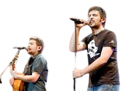

"En estas jaulas tengo a dos criaturas ruidosas, los hermanos Muñoz, David y José. Son como ratas de barrio que se escaparon de un callejón de Cornellà y terminaron atrapadas en mi pequeño reino de penumbra. El mayor, David, es un flaco desgarbado con el pelo oscuro y revuelto, como si lo hubiera peinado un viento sucio. Tiene esa mirada de quien ha visto demasiadas noches de farra y aún cree que puede cantar su salida de aquí. José, el menor, es más robusto, con una cara que parece tallada en piedra barata, y un brillo en los ojos que dice que planea algo estúpido, como si sus rimas pudieran romper estas cadenas. Cantan sobre rumbas y desamores, sobre coches robados y vidas que apestan a gasolina y tabaco. Sus voces son un estruendo molesto, como si alguien hubiera dado cuerda a un juguete roto. Los encadené porque intentaron convencerme con una de sus letras cursis, algo sobre la ‘Raja de una falda’ que me dio ganas de rajarles la garganta en su lugar. Son patéticos, pero su energía caótica tiene un cierto… encanto malsano. Creo que los dejaré aquí, pudriéndose entre acordes imaginarios, hasta que sus canciones me aburran o me inspiren a probar mis nuevas tijeras oxidadas. Uno nunca sabe con estos payasos de la rumba."
 Siguiente Desdichado